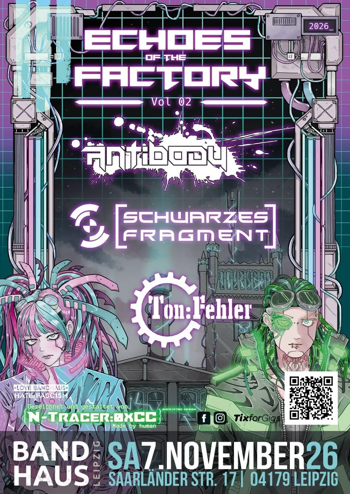

07
Nov
2026
Echoes of the Factory
Unterschicht · Antibody · Schwarzes Fragment
Bandhaus Leipzig
Upcoming
Lineup
- Unterschicht Headliner
- Antibody
- Schwarzes Fragment Opener · Dark Electro / EBM schwarzes-fragment.de
Wo & Wann
Bandhaus Leipzig
Saarländer Str. 17
04179 Leipzig · Deutschland
Samstag, 7. November 2026
Beginn 20:00
Vorverkauf: 16,50 € · Abendkasse: 22,00 €
Sag's weiter
Wer ist Schwarzes Fragment?
Schwarzes Fragment ist das live-erprobte Dark-Electro-/EBM-Projekt aus München & Leipzig — melodisch, energetisch, tanzflächentauglich. Support-Slots u.a. für Kirlian Camera, Das Ich und Klangstabil.